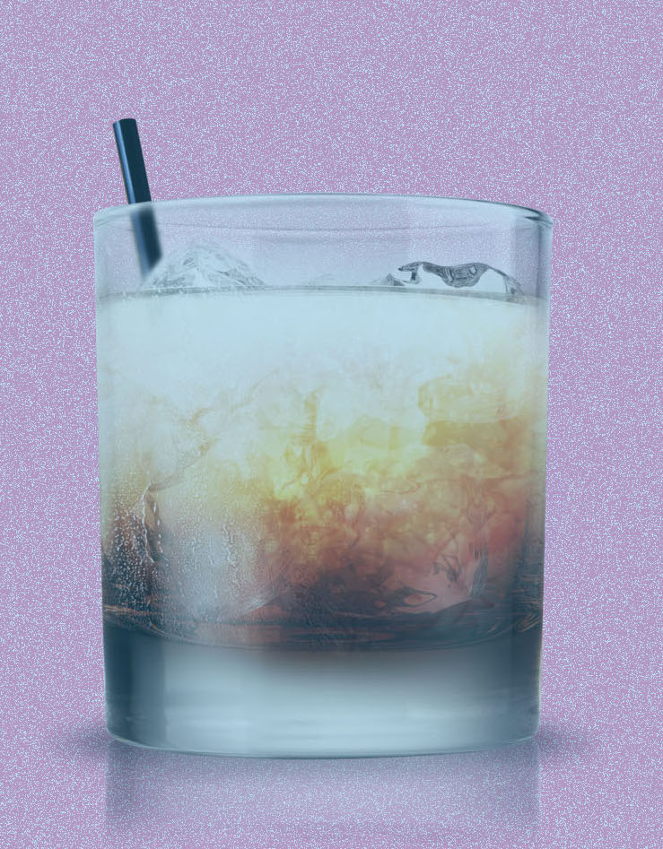

C.BAR
Editor's Note: This is a section for people who love fancy color or attracted by the color of cocktails!

For Color Lover
Megan Deschaine, the bar manager at 492, a restaurant on King Street in Charleston, S.C., sometimes despairs that the Disco Sour, a cocktail that has never left her menu, is so popular that it “will be on my tombstone.”What did she expect? Offer a cocktail that changes color from pale yellow to deep violet while you drink it, and people are going to keep ordering it.
The magical mood-ring ingredient in the Disco Sour is the butterfly pea flower. The blossom, which goes by various names, is native to tropical Asia and is a striking blue. That vibrant hue has made it popular as a natural food and drink coloring for centuries.
But the flower also performs another bit of alchemy: It slowly transforms a drink’s color to purple when an acid like lemon juice is added. In recent months, that special effect has made it a hot ingredient in cocktail bars around the country.